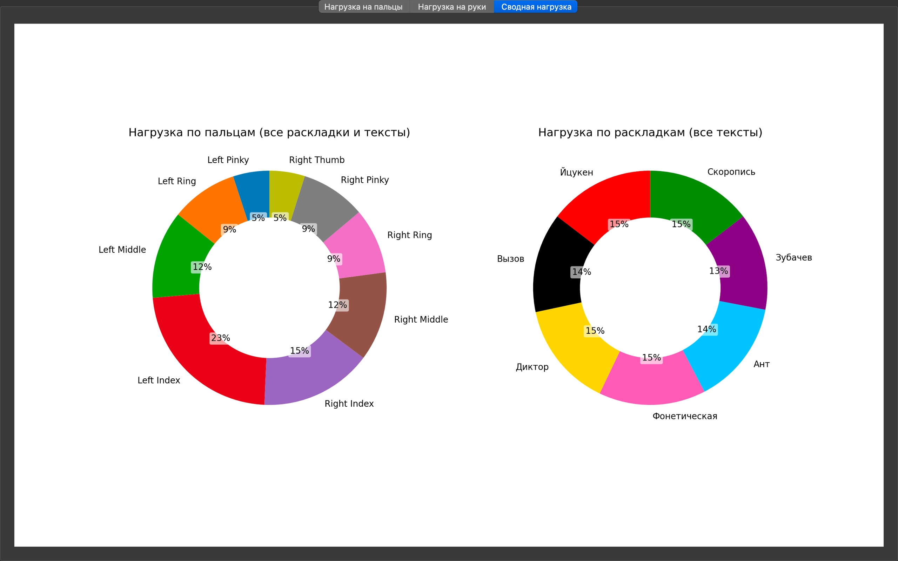

Модуль №3 — Визуализация анализа раскладок
📦 gui.py
Модуль реализует графический интерфейс на PyQt5 для визуализации результатов анализа раскладок клавиатуры. Он импортирует данные из main.py, строит столбчатые диаграммы и таблицы, отображающие нагрузку на пальцы и сравнение раскладок.
—
🎯 Назначение
Построение графиков нагрузки по пальцам
Сравнение раскладок по общему штрафу
Интерактивный выбор раскладки и текста
Отображение таблиц с процентной нагрузкой
—
🧩 Класс: KeyboardGUI
- class KeyboardComparisonGUI(parent=None)
Класс для визуального сравнения русскоязычных раскладок клавиатуры.
При инициализации создаёт главное окно Qt-приложения с тремя вкладками визуализации:
Нагрузка на пальцы — столбчатая диаграмма по каждому пальцу.
Нагрузка на руки — круговая диаграмма по левой и правой руке.
Сводная нагрузка — круговые диаграммы по пальцам и раскладкам.
- Параметры:
parent (QWidget or None) – Родительский элемент Qt (опционально). По умолчанию — None.
Пример
app = QApplication(sys.argv)
window = KeyboardComparisonGUI()
window.show()
—
🔧 Методы класса
- __init__(self)
Инициализирует главное окно приложения и добавляет вкладки с визуализациями.
Устанавливает заголовок окна и размеры.
Создаёт QTabWidget с тремя вкладками: - «Нагрузка на пальцы» — отображает столбчатую диаграмму по пальцам. - «Нагрузка на руки» — отображает круговую диаграмму по рукам. - «Сводная нагрузка» — отображает круговые диаграммы по пальцам и раскладкам.
Устанавливает вкладки как центральный виджет главного окна.
Пример
window = KeyboardComparisonGUI()
Результат
window.windowTitle()
# → 'Сравнение раскладок — нагрузка на пальцы и руки'
window.centralWidget().count()
# → 3 # В окне отображаются три вкладки с визуализациями
- create_finger_chart_tab()
Создаёт вкладку с горизонтальной диаграммой нагрузки на пальцы для всех раскладок.
Для каждой раскладки анализируются три текста, и суммируется количество нажатий по каждому пальцу. Результаты визуализируются в виде горизонтальных столбцов, сгруппированных по пальцам, с цветовой дифференциацией и числовыми подписями.
Пример
window = KeyboardComparisonGUI()
tab = window.create_finger_chart_tab()
Результат
isinstance(tab, QWidget)
# → True # Вкладка с диаграммой по пальцам готова к отображению в интерфейсе
- create_hand_pie_tab()
Создаёт вкладку с круговыми диаграммами распределения нагрузки между руками для каждой раскладки.
Метод:
Загружает общий набор символов с помощью
get_common_chars().Анализирует три текста для каждой раскладки из
LAYOUTS.Суммирует количество нажатий левой и правой рукой.
Строит круговую диаграмму с двумя секторами: «Левая» и «Правая».
Настраивает подписи, цвета, заголовки и визуальные параметры диаграмм.
Размещает диаграммы в сетке (по 3 на строку) внутри одного matplotlib-холста.
Пример
window = KeyboardComparisonGUI()
tab = window.create_hand_pie_tab()
Результат
isinstance(tab, QWidget)
# → True # Вкладка с круговыми диаграммами по рукам готова к отображению
- create_summary_tab()
Создаёт вкладку со сводной визуализацией нагрузки по пальцам и раскладкам.
Метод выполняет следующие действия:
Загружает общий набор символов с помощью
get_common_chars().Для каждой раскладки из
LAYOUTSанализирует три текста и суммирует:Общее количество нажатий по каждому пальцу.
Общее количество нажатий по каждой раскладке.
Строит две круговые диаграммы:
Слева — распределение нагрузки по пальцам (все раскладки и тексты).
Справа — распределение нагрузки по раскладкам (все тексты).
Настраивает подписи, цвета, заголовки и визуальные параметры диаграмм.
- Результат:
QWidget с двумя круговыми диаграммами, готовый для отображения во вкладке GUI.
- Тип результата:
QWidget
Пример
window = KeyboardComparisonGUI()
tab = window.create_summary_tab()
Результат
isinstance(tab, QWidget)
# → True # Вкладка с круговыми диаграммами по пальцам и раскладкам готова к отображению
—
🚀 Точка входа
- main()
Точка входа в приложение.
Выполняет следующие действия:
Создаёт экземпляр
QApplication.Инициализирует главное окно
KeyboardComparisonGUI.Отображает окно.
Запускает главный цикл событий Qt через
app.exec_().
Пример
if __name__ == "__main__":
app = QApplication(sys.argv)
window = KeyboardComparisonGUI()
window.show()
sys.exit(app.exec_())
Результат
Открывается графическое окно с тремя вкладками визуализации.
—
🎨 Цветовая схема раскладок
Йцукен — красный (#FF0000)
Вызов — чёрный (#000000)
Диктор — желтый (#FFD700)
Русфон — розовый (#FF69B4)
Ант — голубой (#00BFFF)
Зубачев — фиолетовый (#800080)
Скоропись — зеленый (#228B22)
—
📌 Полученные графики
Общая нагрузка
{kind=link}

—
Нагрузка на руку

—
Нагрузка на пальцы

—